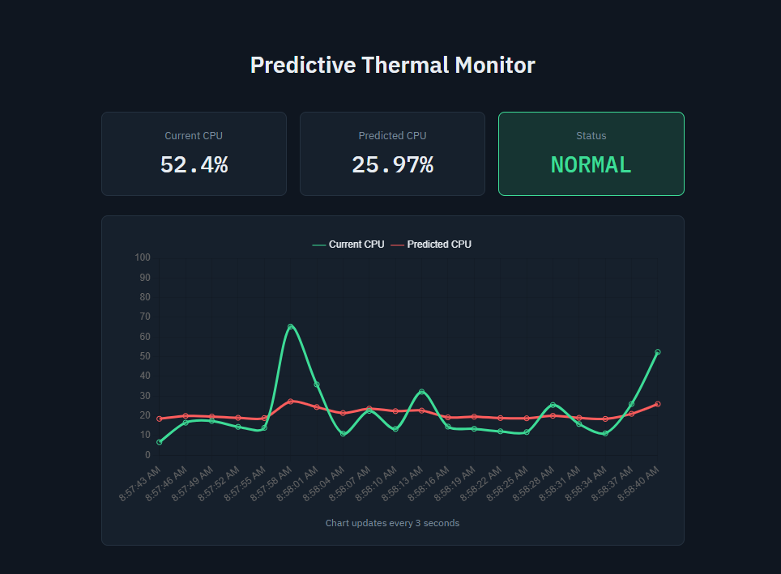

Machine learning
CPU Load & Thermal Monitor
Real-time telemetry engine that fits live system performance metrics to regression models to predict CPU utilization ten seconds into the future.
View on GitHub